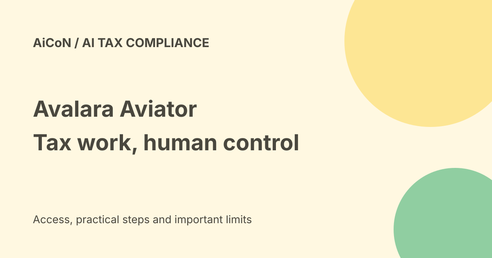

Avalara Aviator: tax agents, renewal access and human approval
Avalara Aviator is a hub of AI agents for business tax work. It can coordinate research, calculations, certificates and returns. Its launch promise of no extra cost for existing customers is not a free public tax service, and access depends on the rollout and your subscriptions.

What is Avalara Aviator?
Aviator brings specialist agents into Avalara's tax and compliance products. Avi is the coordinating agent: it assigns work, raises risks and keeps people involved at important approval points. This is software for a business tax team, not an individual chatbot that files any country's taxes.
Avalara announced Aviator on 23 September 2026. That announcement said general availability would follow the next month's CRUSH Europe event. Its current product FAQ explains access at a customer's next AvaTax or Returns renewal after general availability. Do not read the launch date as proof that every customer already has access.
What the agents do
- Transactions: tax calculations, explanations of line items and transaction-data checks.
- Returns: preparation, reconciliation and filing workflows.
- Research: conversational tax research with statutory citations and jurisdiction details.
- Certificates: exemption certificates, tax IDs and registration checks.
A statutory citation points to a tax law. Reconciliation means checking that the numbers in different records agree. These checks matter more than a fluent answer. Avalara describes deterministic calculations combined with AI for coordination, extracting document information and summarizing laws. Its accuracy and audit claims are vendor claims, not a guarantee against penalties.
Is it free or paid?
The launch release says Aviator is initially delivered to existing customers at no additional cost. That means an included capability for eligible paying customers, not free access to the underlying Avalara products.
The current FAQ says existing customers receive access at their next AvaTax or Returns renewal following general availability. New customers get Aviator as part of their Avalara experience once the account and products are running. There is no separate public rupee price in these sources. Ask your account team about eligible products, renewal timing, usage limits, implementation work and any costs outside the included access before budgeting.
Can an Indian business use it?
The pages reviewed describe AvaTax, AvaTax for Accounts Payable, Returns, Exemption Certificate Management and Tax Research as Aviator-ready. They do not establish which Aviator workflows support Indian GST filings or Indian return types. Avalara's broad global tax coverage does not prove that this agent hub can perform every local workflow.
An Indian exporter dealing with overseas taxes may have a different need from a business filing domestic GST returns. Give Avalara your exact jurisdictions, products and filing tasks. Get written confirmation of support and contract scope. Do not replace an accountant or official filing portal with an unverified agent workflow.
How to start safely
- Identify your existing Avalara products, renewal date and tax jurisdictions.
- Ask the account team whether Aviator is enabled and which tasks your subscription covers.
- Use the Avalara Portal when access is available. The FAQ says no separate integration or opt-in is needed for the included portal experience.
- Start with a research or explanation task rather than a live return.
- Check the cited law, effective date, jurisdiction and underlying transaction data.
- Compare an agent result with your approved records and ask the tax team to review exceptions.
- Define who can approve high-risk actions and how the audit record will be retained.
Human approval is still required
Avalara says return submissions, rule overrides, exemption approvals and other high-liability actions require explicit human sign-off. Background research and data validation are different from authorizing a filing. Keep that distinction clear when setting roles.
The launch describes drafting a custom tax rule, simulating it against past transactions and flagging conflicts. A draft or simulation is not a legal decision. Review the rule and its effect before activation. Avoid putting unnecessary personal or customer information into a research prompt.
What changed since the original post?
The original post described an agent hub included for existing customers. This guide adds the renewal-linked rollout, supported product names and approval boundaries. It also explains why included access does not mean free tax software and why India GST support remains a question for Avalara. No customer account or filing was tested.
FAQ
Can I sign up just for a free tax chatbot?
That is not what the reviewed offer describes. Access is tied to Avalara accounts and products.
Will it file a return without my approval?
Avalara's FAQ says critical actions such as submissions require human sign-off. Check your account's roles and workflow before using it.
Does a cited answer count as tax advice?
A citation helps you check the answer. It does not remove the need to verify the facts, law and filing obligations with a qualified tax professional.
Sources: Aviator product and rollout FAQ · 23 September launch and initial cost promise · Agentic compliance overview. Checked 7 October 2026.